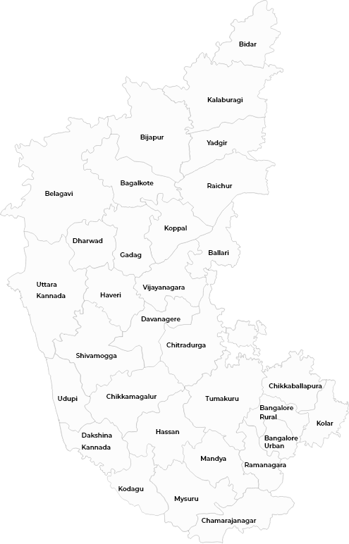
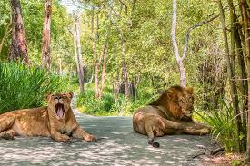
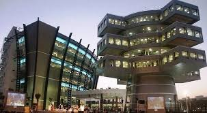
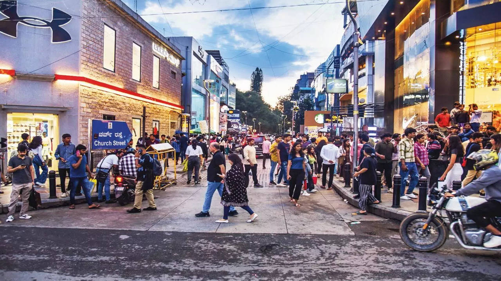
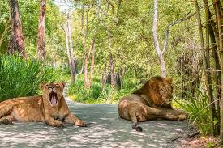
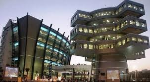
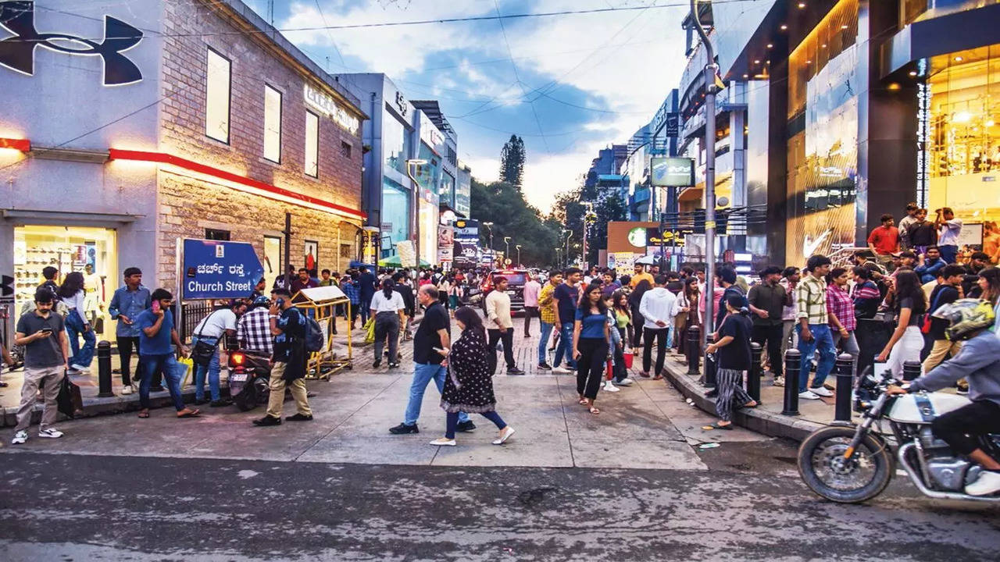
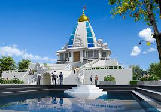
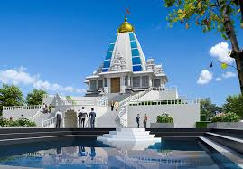

Bangalore: The Garden City and Silicon Valley of India
Bangalore, officially known as Bengaluru, is the capital of Karnataka and one of India's most dynamic and vibrant cities. Known for its pleasant climate, lush gardens, historical landmarks, and booming tech industry, Bangalore seamlessly blends tradition with modernity, making it a fantastic tourist destination. Rich Heritage and Culture Bangalore boasts several historical sites such as: Bangalore Palace – Inspired by England’s Windsor Castle, this stunning palace offers a glimpse into royal heritage. Tipu Sultan’s Summer Palace – A historical marvel showcasing Indo-Islamic architecture and the legacy of Tipu Sultan. ISKCON Temple – One of the largest Krishna temples in the world, offering spiritual serenity. Lush Greenery and Parks Despite being a tech hub, Bangalore is often called the “Garden City of India” due to its beautiful parks and gardens: Lalbagh Botanical Garden – A 240-acre garden with exotic plant species and a stunning glasshouse. Cubbon Park – A massive green space in the heart of the city, perfect for nature lovers and joggers. Bustling Food and Nightlife Scene Bangalore is a paradise for food lovers, offering a mix of South Indian delicacies and global cuisines. From MTR and Vidyarthi Bhavan for authentic dosas to high-end rooftop bars and craft breweries, the city caters to every taste. Shopping and Local Markets Commercial Street – Perfect for street shopping, offering clothes, jewelry, and souvenirs. Brigade Road and MG Road – Ideal for branded shopping and high-end boutiques. Chickpet Market – A haven for silk sarees and traditional fabrics. Tech and Innovation Hub As India's Silicon Valley, Bangalore is home to top IT companies and innovation centers. Tech parks, museums like Visvesvaraya Industrial & Technological Museum, and science hubs make it an exciting destination for tech enthusiasts. Adventure and Weekend Getaways Bangalore is also surrounded by fantastic getaway destinations: Nandi Hills – A breathtaking sunrise viewpoint just 60 km from the city. Savandurga – One of Asia’s largest monolithic hills, perfect for trekking. Bannerghatta National Park – A wildlife sanctuary offering safaris and a butterfly park.
 





 
